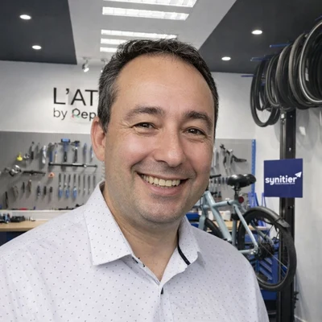
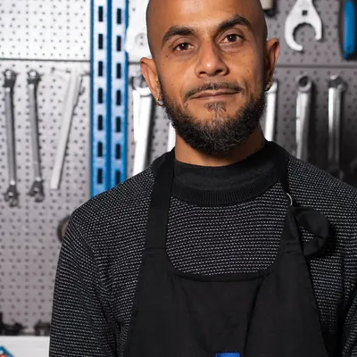

Nous croyons que réparer a du sens
Synitier est une équipe de formateurs virtuoses convaincus que transmettre un savoir-faire technique peut changer un parcours de vie et contribuer à une mobilité plus durable.
Nous contacter pour parler de votre projetHistoire de se mettre en selle… et de bâtir un avenir durable
Tout commence avec une chaîne, maillon après maillon, elle relie les savoirs, les gestes et les personnes. Elle transmet la force, l'élan, le mouvement, tout comme l'apprentissage relie la théorie à la pratique, la technique à la passion.
En formation, on apprend à renforcer chaque maillon : comprendre le fonctionnement, répéter les gestes, partager les bonnes pratiques. Pas à pas, on gagne en assurance, on ajuste, on s'entraide. Jusqu'à ce que tout s'aligne, que le mouvement devienne fluide, et que la mécanique prenne tout son sens.
Chez Synitier, nous croyons que la maîtrise du geste est le premier pas vers la liberté. Celle de réparer, de transmettre, de se déplacer autrement, librement, durablement, en harmonie avec son environnement.

Nous formons des femmes et des hommes qui redonnent vie aux vélos, aux vélos à assistance électrique (VAE) et aux trottinettes électriques. Derrière chaque geste, il y a une idée simple : réparer plutôt que remplacer, comprendre pour mieux transmettre, agir pour un avenir plus durable.
Notre mission et nos valeurs
Trois convictions qui orientent chacune de nos formations
Pratique
On apprend en faisant. Chaque heure de formation est une heure sur un vrai véhicule, avec de vrais outils, face à de vraies pannes.
Inclusif
Peu importe votre âge, votre parcours ou votre niveau de départ. La formation s'adapte à vous, pas l'inverse.
Durable
Réparer plutôt que remplacer est notre philosophie. On forme des techniciens qui prolongent la vie des équipements et réduisent les déchets.
Une équipe soudée, entre experts de la mobilité et passionnés de la transmission
Direction et administration
Martine BOCQUILLON
Présidente
Référente handicap
Patrick OHAYON
Directeur mobilité
Qualité et certifications
Nathan CHETRIT
Référent commercial
et administratif
Marie-Laure SÉNÉCHAL
Administratif
Comptabilité et contrôle de gestion
Formateurs

Sébastien CATSAROS
Formateur référent
Léandre DENNECKER
Formateur

Silvain PINARD
Formateur
Présents dans plusieurs villes
pour vous former au plus près
75015 Paris
75014 Paris
69006 Lyon
69003 Lyon
59800 Lille
13002 Marseille
34470 Pérols
Questions fréquentes
Aucun prérequis technique n'est nécessaire. Nos formations sont accessibles à tous, quel que soit votre parcours. Nos formateurs vous accompagnent pas à pas, depuis les bases jusqu'aux gestes techniques du métier.
Oui, tout à fait. Nos formations sont ouvertes aux demandeurs d'emploi. Elles sont finançables via le CPF, et si votre solde est insuffisant, France Travail peut compléter le financement grâce à une demande d'abondement. Nous vous accompagnons dans ces démarches.
Oui. Grâce à nos sessions individualisées, le planning de formation est adapté à vos disponibilités. Que vous travailliez à temps partiel, en horaires décalés ou en intérim, nous construisons un calendrier compatible avec votre activité professionnelle.
Nos sessions sont individualisées et personnalisées : nous adaptons le planning de formation en fonction de vos disponibilités. Vous travaillez à temps partiel ou vous réalisez des missions en intérim ? Pas de souci, le calendrier sera établi en fonction de vos disponibilités.
Nous travaillons par petits groupes pour garantir un accompagnement étroit, efficace et personnalisé. Chaque session accueille donc un nombre limité de stagiaires afin que chacun puisse pratiquer et progresser à son rythme.
Non, tous les outils et équipements professionnels sont mis à disposition par Synitier. Nos ateliers sont équipés de tout le matériel nécessaire pour travailler dans les conditions réelles du métier.
Oui, c'est même encouragé ! Travailler sur votre propre véhicule est un excellent moyen d'apprendre en situation concrète, en complément des cas pratiques prévus dans le programme.
Si votre budget CPF ne couvre pas l'intégralité du coût de la formation, plusieurs solutions peuvent être envisagées :
- Si vous êtes inscrit à France Travail, nous pouvons vous accompagner dans la réalisation d'une demande d'abondement afin de compléter votre financement.
- Si vous êtes salarié, votre employeur ou votre OPCO peut également participer au financement de votre formation.
- Vous avez aussi la possibilité de compléter le montant restant à charge, avec une solution de paiement en plusieurs fois sans frais.
Notre équipe reste disponible pour étudier avec vous la solution de financement la plus adaptée à votre situation.
Lors de votre inscription à la formation via le CPF, votre identité doit être vérifiée afin de sécuriser la démarche. Cette vérification se fait grâce à FranceConnect+.
Deux solutions sont possibles :
1️⃣ L'Identité Numérique La Poste
Vous pouvez créer votre identité numérique de deux façons :
- Depuis votre smartphone, en téléchargeant l'application L'Identité Numérique La Poste.
Tutoriel officiel – L'Identité Numérique La Poste - En vous rendant dans un bureau de poste, avec une pièce d'identité valide, où un conseiller pourra vous accompagner pour créer votre identité numérique.
2️⃣ France Identité
Si vous possédez la nouvelle carte nationale d'identité électronique et un smartphone compatible, vous pouvez également utiliser l'application France Identité.
Tutoriel officiel – France Identité
La création de votre identité numérique prend généralement quelques minutes et vous permettra ensuite de valider votre inscription à la formation en toute sécurité.
Si vous rencontrez des difficultés, notre équipe peut vous accompagner pas à pas pour vous aider dans ces démarches.
Que vous souhaitiez décrocher un poste en atelier, créer votre propre activité en tant qu'indépendant ou franchisé, nos formations délivrent les compétences clés pour se lancer. Des stages de perfectionnement en entreprise seront également possibles si vous le désirez à l'issue de votre formation.
Une question sur nos formations ?
Notre équipe est là pour vous renseigner et vous orienter vers le parcours le plus adapté à votre situation.
Nous contacter pour parler de votre projet